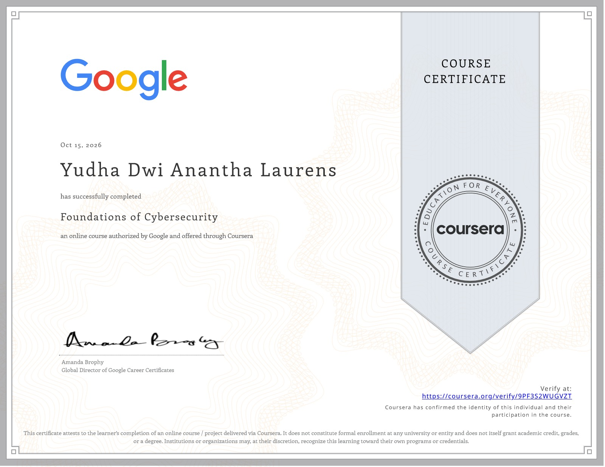

Full-stack developer dengan pola pikir security-first.
Saya Yudha Dwi Anantha Laurens, mahasiswa Computer Science (Semester 5) dengan fokus mobility Cyber Security di Universitas Bina Nusantara. Membangun aplikasi web full-stack yang tangguh, aman, dan berorientasi pada pemecahan masalah nyata.

Fondasi teknis dan minat riset
Tentang Saya
Halo! Saya Yudha Dwi Anantha Laurens. Perjalanan saya di dunia teknologi berangkat dari rasa ingin tahu bagaimana sebuah sistem beroperasi di balik layar — dari arsitektur frontend yang intuitif, API backend yang efisien, hingga cara melindungi integritas data pengguna dari potensi eksploitasi.
Saat ini saya menempuh semester 5 Computer Science di Universitas Bina Nusantara dan mendalami program mobilitas Cyber Security. Saya terbiasa mengombinasikan kebiasaan coding yang bersih (clean code) dengan prinsip keamanan defensif (secure by design). Di luar coding, saya senang berkontribusi dalam event teknologi dan lomba.
Download Resume Lengkap (PDF)Project
Koleksi aplikasi web, keamanan siber, dan AI yang dibangun dari riset hingga produksi.
ResQ-Food Platform
Platform digital untuk meminimalkan pemborosan pangan (food waste). Menghubungkan gerai makanan dan restoran lokal dengan konsumen untuk menjual produk pangan berlebih berkualitas tinggi dengan potongan harga khusus.
- Pencarian dan penemuan gerai makanan terdekat berbasis lokasi pengguna
- Arsitektur modern Next.js App Router dengan integrasi Tailwind CSS & Vercel
CookieRisk Analyzer
Platform analisis risiko privasi web untuk mendeteksi dan mengaudit third-party cookies otomatis via headless Playwright, scoring ISO 27005 & OWASP Risk Rating, serta audit kepatuhan terhadap UU PDP No. 27/2022 dan GDPR.
OTA Mobile App Security Assessment
Penetration testing pada aplikasi Android Online Travel Agent: mengidentifikasi 4 celah ber-scoring CVSS (absennya root detection, eksposur token JWT & PII plaintext di SharedPreferences, akses 10 tabel SQLite tidak terenkripsi, dan konfigurasi backup tidak aman) beserta rekomendasi remediasi.
AI Handsign Recognition
Aplikasi pengenalan bahasa isyarat menggunakan deep learning dan computer vision real-time melalui webcam untuk membantu aksesibilitas komunikasi.
Library Management System
Sistem informasi perpustakaan terstruktur dengan autentikasi pengguna, manajemen inventaris buku, sistem denda, serta pencarian buku berkategori.
BelanjaRia Online Store
Aplikasi toko online komprehensif mencakup katalog dinamis, state management keranjang belanja, dashboard admin, dan simulasi alur checkout.
Stack teknologi & alat yang digunakan
Klik atau hover badge teknologi untuk menyorot proyek terkait di portofolio.
Frontend Development
Interactive & SemanticMembangun antarmuka modern, responsif, terstruktur semantik, dan mudah diakses (a11y).
Backend & Architecture
RESTful & Secure APIsPembuatan REST API terstruktur, autentikasi aman, validasi input berlapis, dan server logic.
Database & Storage
Relational & NoSQLPerancangan skema terstandarisasi, normalisasi data, indeksasi performa, dan integritas transaksi.
Security & DevOps Tools
Mitigasi OWASP Top 10, mobile pentesting, audit otomatis Playwright, dan isolasi environment Docker.
Pengalaman kerja & rekam jejak akademik
-
2024 — Sekarang
S1 Computer Science
Universitas Bina Nusantara (BINUS University)
Semester 5, program Mobility Cyber Security. Fokus pada konstruksi algoritma, struktur data terdistribusi, keamanan jaringan, kriptografi dasar, dan arsitektur piranti lunak.
-
Sept 2023 — Jan 2024
Content Production & Creative Specialist
PT Selda Design & Digital Marketing (SDS Visual)
Membantu proses produksi visual multimedia untuk klien di berbagai kanal digital, serta terlibat langsung dalam alur operasional photoshoot dan penataan aset branding.
-
Juni 2023 — Sept 2023
Graphic Designer & Creative Content Intern
PT Kalman Group Indonesia
Merancang aset visual promosi, materi komunikasi brand, dan konten kreatif yang disesuaikan dengan kebutuhan kampanye berbagai klien perusahaan.
-
Lulus 2024
Pendidikan Menengah Kejuruan
SMK Pariwisata Harapan, Denpasar — Bali
Membangun dasar disiplin kerja, komunikasi profesional tim, dan etos kolaborasi sebelum melanjutkan pendidikan tinggi di bidang ilmu komputer.
Sertifikasi & pencapaian

Foundations of Cybersecurity
Google (via Coursera) — Oktober 2026
Penguasaan prinsip dasar keamanan siber, kerangka kerja manajemen risiko (NIST CSF), etika keamanan informasi, triad CIA, audit kepatuhan, serta pengenalan tools SIEM dan analisis insiden keamanan.

Front-End Development Certification
Bina Nusantara Computer Club (BNCC) — Class of 2024/2025
Pencapaian penghargaan predikat kehormatan (Distinction) dalam penguasaan perancangan antarmuka web, arsitektur DOM modern, asynchronous JavaScript, serta implementasi standar komponen modern.
Mari terhubung & berkolaborasi
Membuka peluang baru
Saya terbuka untuk kesempatan magang (internship), kolaborasi riset keamanan sistem, maupun pengembangan proyek web modern. Jangan ragu menyapa melalui pesan langsung atau formulir di samping.